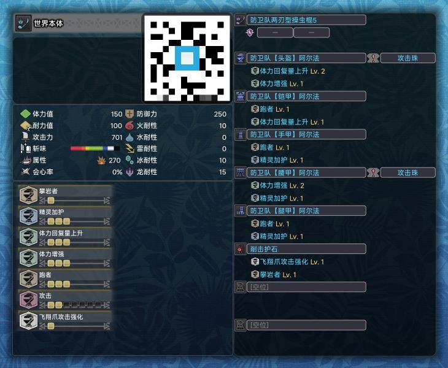
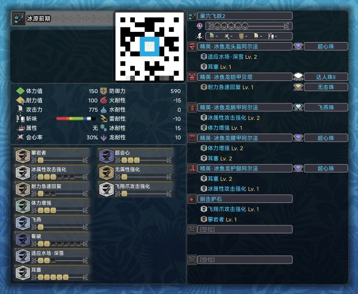
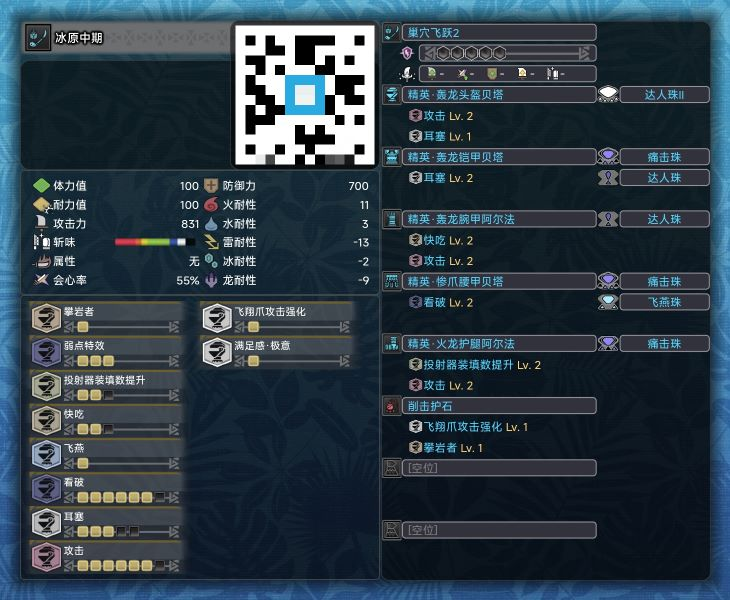
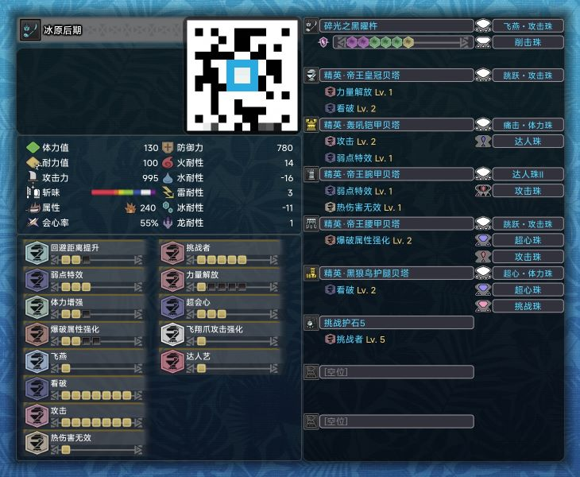
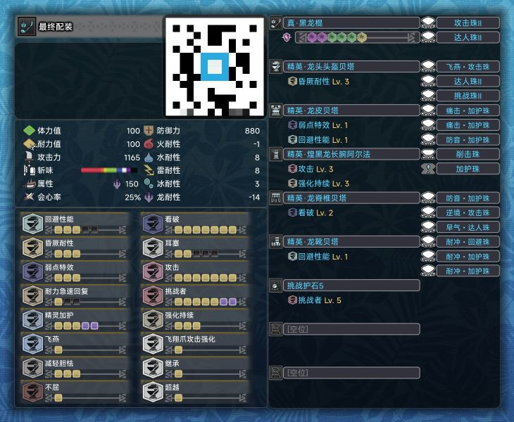
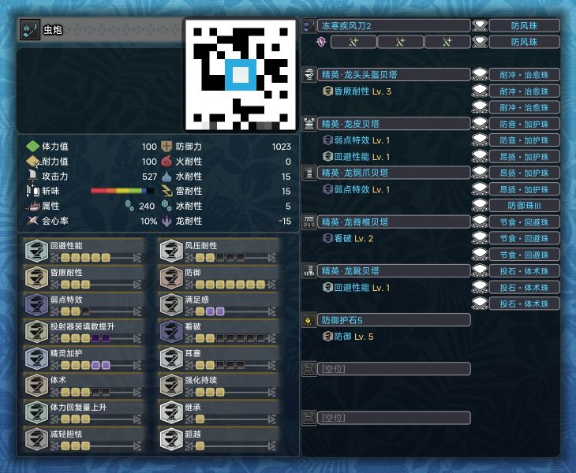

前 言
世 界 本 体
简介
防卫队套装是卡普空在冰原DLC更新后新增的装备，且防具还是作为初始赠送的装备，但对于世界本体来说十分超模，可直接打穿世界本体。如果你希望有一个好的世界本体游戏体验，建议不要使用这套装备。
如果你想快速打通世界本体，进入冰原，穿就对了，只是没有磨练好技术进冰原容易受苦。
防具分析
防卫队套装拥有非常高的防御力，能够在本体提供非常高的伤害减免。
武器分析
防卫队两刃型操虫棍具有非常高的基础攻击力，其数值甚至达到了冰原中期装备的水平，爆破属性也能在本体提供不俗的伤害，是一把非常强的武器，并且制造材料简单，不需要刻意刷取材料。
·客制强化：穿防卫队就别考虑客制了，世界本体客制材料获取难度很大。
技能分析
三级的精灵加护、体力回复量上升、和体力增强提供了极强的生存能力，虽然没有攻击加成技能，但配合防卫队两刃型操虫棍本身不俗的伤害，轻松打穿世界本体；飞翔爪攻击强化基本是轻武器必备，由削击护石提供。
猎虫选择
喜欢登虫的话选「列吉纳波兰堤虫」，否则选「奥希纳朵虫」。

冰 原 前 期
简介
冰鱼龙是玩家在冰原遭遇的第一头大型怪物，难度较低，因此可以快速入手，整体性能不错，作为冰原前期开荒较为合适。
防具分析
冰鱼龙套提供的技能保命能力强，且能够很好地适应冰原环境。
武器分析
巢穴飞跃俗称“搔鸟棍”，讨伐大师位的搔鸟即可，难度简单，自带20%会心率，前期性能优异。
·客制强化：冰原前期没机会客制。
技能分析
体力强化提供一定的容错率；适应深雪能够提高在雪地的机动性，对操虫棍来说收益较高；耳塞可以防止怪物吼叫打断动作，本人喜欢，如果你是翻滚高手请无视；飞燕、看破、超会心和无属性强化增加伤害，配合一次软化进一步提高输出。
猎虫选择
喜欢登虫的话选「齿钳锹形虫·攻」，否则选「西纳托红枫虫·愈」。

冰 原 中 期
简介
技能带来极致的输出！轰龙三件套的满足感带来极致的保命！唯一缺陷便是没有五级耳塞，不过大抵是够用的。
防具分析
轰龙三件套的满足感很重要，其次也能提供不俗的输出技能；惨爪和火龙装备纯粹是看技能，全套R10的装备带来的防御力也不错。
武器分析
巢穴飞跃俗称“搔鸟棍”，讨伐大师位的搔鸟即可，难度简单，自带20%会心率，中期性能也不错。
·客制强化：冰原中期没机会客制。
技能分析
高等级的弱点特效、看破、攻击、飞燕可大幅增加伤害，配合一次软化进一步提高输出；装填数提升勉强增强操虫棍的续航能力；三级耳塞基本够用；满足感和快吃可极大提高生存能力。
猎虫选择
喜欢登虫的话选「齿钳锹形虫·攻」，否则选「西纳托红枫虫·愈」。

冰 原 后 期
简介
此套装备基本可以应对所有的怪物，炎王龙三件套带来的达人艺配合操虫棍自带的斩味消耗减少也可以保证较长的紫斩，核心输出技能也都拉满，很强。
防具分析
炎王龙三件套主要是为了达人艺降低斩味消耗；黑轰龙的衣服与黑狼鸟的腿都拥有非常优秀的技能与孔位，基本属于后期万金油装备。
武器分析
猛爆碎龙的棍子是除了黑龙棍以外输出最高的棍子，还带有猎虫的气力加成，综合性能仅次于黑龙棍，唯一缺点就是紫斩太短。
·客制强化：吸血+会心+属性，非常标准的R12客制强化，注意吸血没必要客制高等级，收益十分有限。
技能分析
核心攻击技能全部拉满，这个不必多说；达人艺可降低斩味消耗，对于短紫斩猛爆棍很重要；飞翔爪攻击强化为必备技能，走到这一步基本也明白其重要性。
猎虫选择
喜欢登虫的话选「齿钳锹形虫·攻」，否则选「西纳托红枫虫·愈」。

最 终 配 装
简介
最终配装，综合属性达到极致，黑龙四件套带来的继承与超越可大幅提升生存能力与技能水平，黑龙棍虽为负会心，但在软化+技能的提升会心率下几乎可达100%。
防具分析
黑龙四件套带来继承和超越技能，本身的技能组也相当优秀，孔位更是惊人的三个四级孔；煌黑龙的手带来三级强化持续，更能大幅提升操虫棍的续航能力。
武器分析
黑龙武器，拥有最高的物理输出，在没有特定与高属性要求的战斗下（以及某些邪道流派）的唯一选择，其提供的气力强化也是最强的猎虫强化属性。
·客制强化：吸血+会心+属性，非常标准的R12客制强化，注意吸血没必要客制高等级，收益十分有限。
技能分析
核心攻击技能全部拉满，这个不必多说；继承带来满额的体力值与耐力值，超越进一步解放技能等级上限；强化持续极大延长猎虫强化时间，提升续航能力；耐冲三配合二级耳塞在三灯的情况下等同于五级耳塞、三级耐震与三级风压，再加上昏厥耐性和三级回性，大幅提升战斗流畅度；精灵加护提高容错率。
猎虫选择
喜欢登虫的话选「齿钳锹形虫·攻」，否则选「西纳托红枫虫·愈」（一直都没变过）。

邪 道 · 虫 炮
警 告
该流派会极大破坏你的游戏体验，并让你的技术直线下滑，请谨慎使用！
简介
顾名思义，虫炮流就是舍弃近战输出，全程指挥虫子攻击，配合上吸血拉满，几乎能够应对所有战斗，而对技巧的要求则几乎为零。只需不停按动你的鼠标左键，再稍加走位，就能直接叮死怪物，属于最强邪道流派之一。
防具分析
黑龙四件套带来继承和超越技能，除了极大提高生存能力外，也能提高其它关键技能的等级上限，并提供足够的孔位搭配技能；上位武器比大师位的武器客制吸血的收益更大，因此选择上位的风飘龙棍。
武器分析
风飘龙棍作为上位武器，其吸血能力强于大师位的武器，并且其自带的猎虫属性强化也能提高虫子的伤害。
·客制强化：三级吸血，极限苟命。
技能分析
生存能力拉满就对了，虫子不吃技能加成，三个投石·体术珠可根据怪物具体属性更换为对应的耐属珠。
猎虫选择
虫炮流唯一指定虫子「光辉独角仙·速」，可以五个属性各备一只，针对不同的怪物进行选择。
